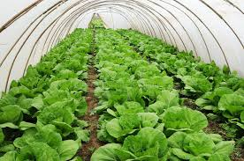

Our Info
Agriculture & Organic Product Form
Organic farming is a production system which avoids or largely excludes the use of synthetically compounded fertilizers, pesticides, growth regulators, genetically modified organisms and livestock food additives.
